Bienvenue
Ce module va vous montrer comment créer et mettre en valeur des diagrammes en barres avec le package {ggplot2}. Vous allez apprendre à :
créer et interpréter des diagrammes en barres
customiser des diagrammes en barres avec aesthetics et parameters
utiliser des ajustments de position
utiliser des facettes pour créer des sous-graphiques.
Ce module est tiré du livre de R for Data Science par Hadley Wickham et Garrett Grolemund, publié par O’Reilly Media, Inc., 2016, ISBN: 9781491910399. Vous pouvez obtenir le livre à ici : shop.oreilly.com.
Ce module utilise les packages {ggplot2} et {dplyr}, qui ont été pré-installés.
Diagramme a barres
Comment créer un diagramme à barres
Pour faire un diagramme en barres avec {ggplot2}, ajouter geom_bar() au template {ggplot2}. Par exemple, le code ci-dessous crée un diagramme à barres à partir de la variable cut du jeu de données diamonds, qui est dans {ggplot2}.
ggplot(data = diamonds) +
aes(x = cut) +
geom_bar()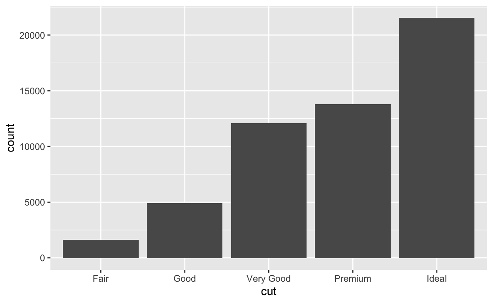
L’axe y
Ne renseignez pas de \(y\) dans la fonction aes lorsque vous utilisez geom_bar(). En effet, {ggplot2} va automatiquement compter combien de fois la valeur \(x\) se trouve dans le jeu de données, puis représenter ce nombre sur l’axe des \(y\). Par exemple, le graphique au dessus montre que plus de 20 000 diamants du jeu de données ont la valeur \(x\) Ideal.
Vous pouvez calculer cette information manuellement avec la fonction count() du package dplyr.
diamonds %>%
count(cut)geom_col()
Pour associer la hauteur non pas à la fréquence mais à une variable du jeu de données, utilisez geom_col() (col pour colonne).
ggplot(data = pressure) +
aes(x = temperature, y = pressure) +
geom_col()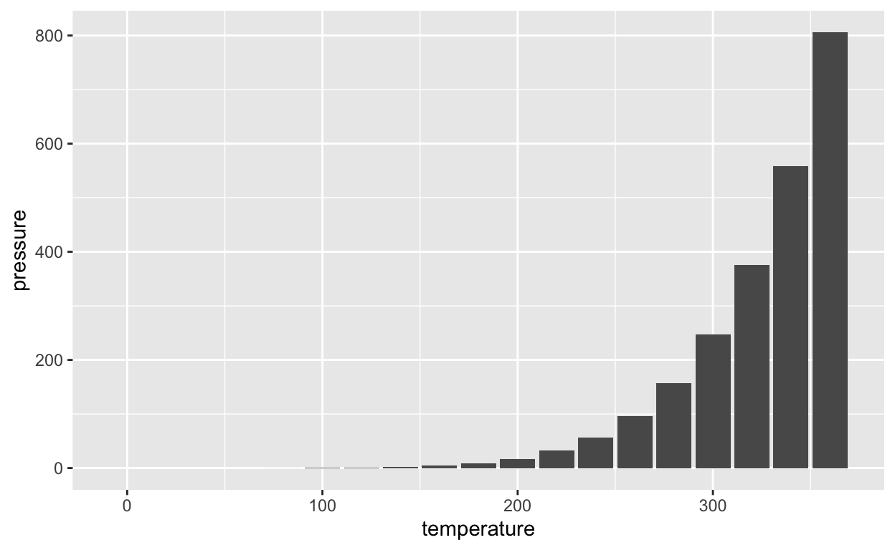
Données pour geom_col()
Lorsque vous utilisez geom_col(), vos valeurs \(x\) et \(y\) doivent avoir une relation de un à un, tel que dans le jeu de données pressure (c.-à-d. chaque valeur de temperature est couplée à une valeur de pressure).
pressureExercice 1 - Créer un diagramme à barres
Utilisez le bloc de code ci-dessous pour représenter la distribution de la variable color dans le jeu de données diamonds qui est dans le package {ggplot2}.
ggplot(data = diamonds) +
aes(x = color) +
geom_bar()Exercice 2 - Interprétation
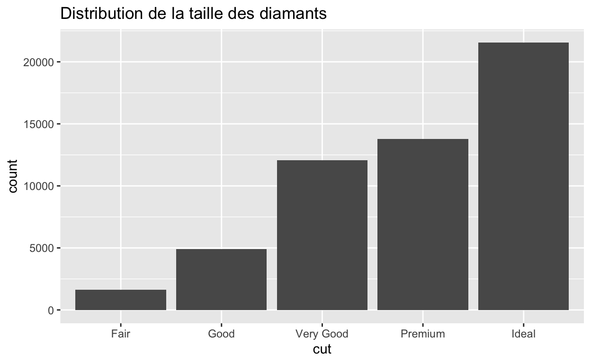
Exercice 3 - Qu’est ce qui n’a pas fonctionné ?
Trouvez l’erreur et corrigez le code pour créer un graphique.
ggplot(data = pressure) +
aes(x = temperature, y = pressure) +
geom_bar()Error: stat_count() can only have an x or y aesthetic.
ggplot(data = pressure) +
aes(x = temperature, y = pressure) +
geom_col()Exercice 4 - count() et col()
Recréez un diagramme en barres avec la variable color de l’exercice précédent, mais utilisez count() pour calculer manuellement la hauteur des barres. Utilisez ensuite geom_col() pour représenter les résultats sous la forme d’un diagramme en barres. Est-ce que ce graphique ressemble à celui de l’exercice 1 ?
diamonds %>%
count(color) %>%
ggplot() +
aes(x = color, y = n) +
geom_col()Aesthetics (paramètres esthétiques de projection)
Aesthetics pour bars
geom_bar() et geom_col() peuvent utiliser différents paramètres esthétiques :
alpha
color
fill
linetype
size
Un de ces paramètres esthétiques, la couleur, crée les résultats les plus surprenants. Tentez de prédire ce que le code ci-dessous va renvoyer, et ensuite lancez-le.
ggplot(data = diamonds) +
aes(x = cut, color = cut) +
geom_bar()fill
Le paramètre esthétique color contrôle la bordure de chaque barre, ce qui n’est pas forcément ce que vous voulez. Pour colorer l’intérieur de chaque barre, utilisez le paramètre esthétique fill:
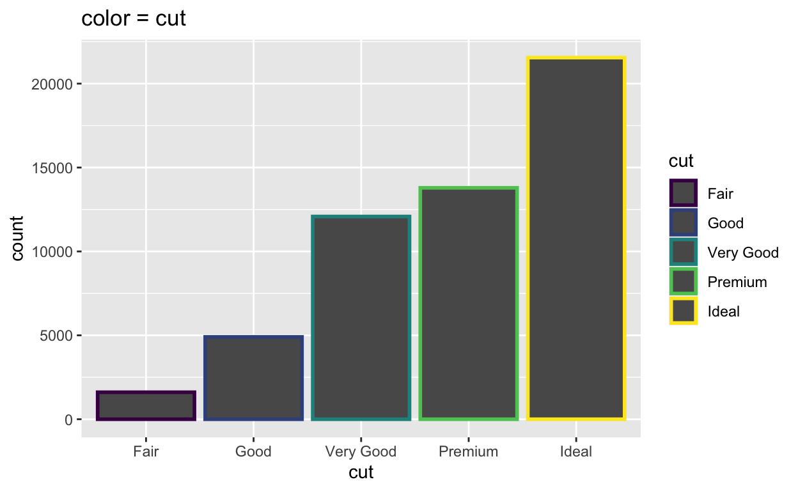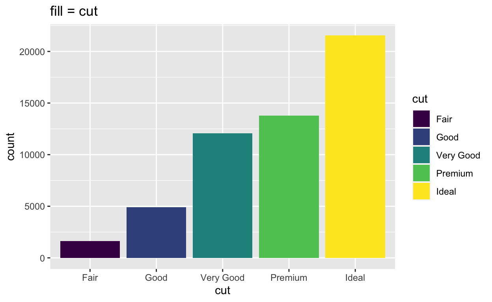
Expérimentez ci-dessous avec fill et d’autres paramètres esthétiques, comme alpha, linetype, et size.
ggplot(data = diamonds) +
aes(x = cut, color = cut) +
geom_bar()En résumé : alpha contrôle la transparence des barres, color la couleur des bordures des barres, fill la couleur des barres, linetype le type de ligne pour les bordures des barres, et size la taille des bordures des barres.
width (largeur)
Vous pouvez contrôler la largeur de chaque barre dans votre diagramme en barres avec le paramètre width. Changez width à 1 puis à 0.5. Voyez-vous la différence ?
ggplot(data = diamonds) +
aes(x = cut, fill = cut) +
geom_bar(width = 0.9)Notez que width est un paramètre qui doit être mis dans la fonction geom.
Exercice 5 - aesthetics
Créez un diagramme en barres coloré avec la variable class du jeu de données mpg qui est dans {ggplot2}. Colorez l’intérieur de chaque barre en fonction de class.
ggplot(data = mpg) +
aes(x = class, fill = class) +
geom_bar()Ajustement des positions
Positions
Si vous utilisez fill pour représenter une nouvelle variable, geom_bar() va renvoyer un diagramme à barres empilé :
ggplot(data = diamonds) +
aes(x = cut, fill = clarity) +
geom_bar()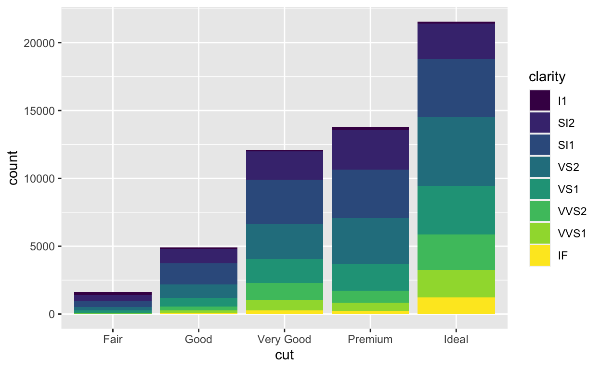
Ce graphique représente 40 combinaisons différentes de cut et de clarity, chaque combinaison étant représentée par un rectangle. geom_bar() présente les rectangles en empilant ceux qui ont la même valeur de cut. Vous pouvez changez cela grâce à l’ajustement de positions.
position = “dodge”
Pour placer des rectangles qui ont la même valeur de cut côte à côte, ajoutez position = "dodge" dans la fonction geom.
ggplot(data = diamonds) +
aes(x = cut, fill = clarity) +
geom_bar(position = "dodge")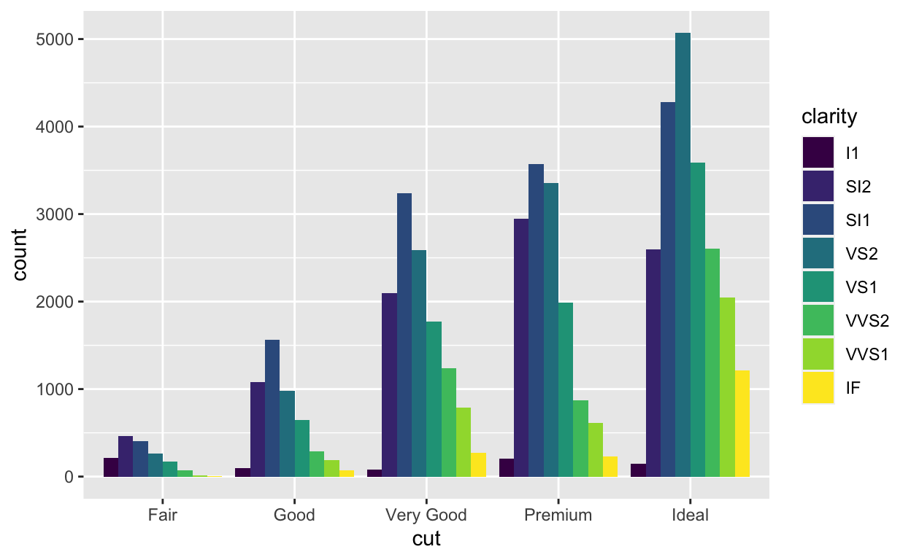
Ce graphique montre les mêmes rectangles que le graphique précédent. Cependant, il présente les rectangles qui ont la même valeur de cut côte à côte.
position = “stack”
Pour créer un diagramme à barres empilées, changez la position par “stack” (c.-à-d. position = "stack"), ce qui est utilisé par défaut par geom_bar().
ggplot(data = diamonds) +
aes(x = cut, fill = clarity) +
geom_bar(position = "stack")
position = “fill”
Pour que la barre prenne l’axe des \(y\) entièrement, utilisez position = "fill". {ggplot2} va superposer les rectangles puis les mettre à l’échelle dans chacune des barres.
ggplot(data = diamonds) +
aes(x = cut, fill = clarity) +
geom_bar(position = "fill")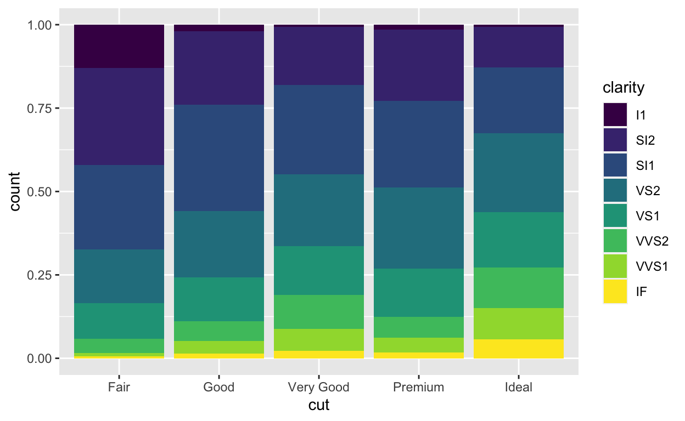
Ceci permet de comparer des proportions. Par exemple, vous pouvez regarder comment les proportions de diamants avec une clarté IF changent entre les différents types de tailles (cut).
Qu’est-ce qu’un ajustement de position ?
Chaque fonction geom dans {ggplot2} prend un argument position qui est par défaut un choix ‘raisonnable’. Vous pouvez le modifier pour que les objets ne se chevauchent pas.
Par exemple, dans ce graphique, chaque valeur de cut est associée à huit rectangles (I1, SI2, SI1, VS2, VS1, VVS2, VVS1, et IF). Chacun de ces rectangles devrait se trouver à la même place : directement au-dessus de la valeur du cut qui lui est associé, avec le bas du rectangle à zéro. Mais si on le représentait de cette façon, les rectangles seraient au-dessus les uns des autres.
Voilà à quoi cela ressemblerait si vous pouviez regarder le graphique depuis le côté.
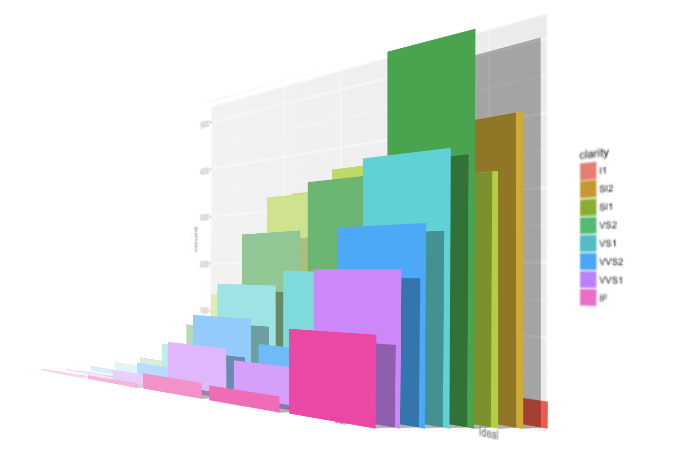
position = “identity”
… et voilà à quoi cela ressemblerait si vous pouviez voir le graphique depuis le devant. Vous pouvez faire ce graphique avec position = "identity".
ggplot(data = diamonds) +
aes(x = cut, fill = clarity) +
geom_bar(position = "identity")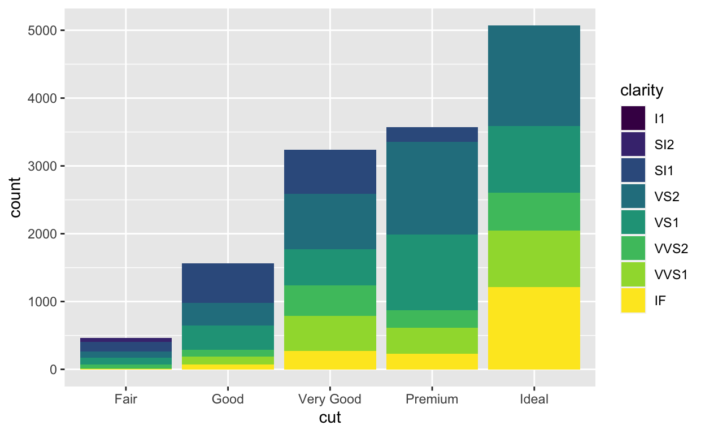
L’ajustement de position de {ggplot2} indique comment doivent être re-distribués les objets qui se superposent. position = "identity" est l’ajustement qui laisse les objets se superposer. C’est un mauvais choix pour des diagrammes à barres car le graphique ressemble à un diagramme à barres empilées alors qu’il n’en est pas un.
Exercice 6 - Positions
Recréez le graphique ci-dessous. Souvenez-vous : color est le nom d’une variable dans diamonds (à ne pas confondre avec le paramètre esthétique color).

ggplot(data = diamonds) +
aes(x = color, fill = clarity) +
geom_bar(position = "fill", width = 1)Exercice 7 - Positions
Recréez le graphique ci-dessous. Souvenez-vous : color est le nom d’une variable dans diamonds (à ne pas confondre avec le paramètre esthétique color).
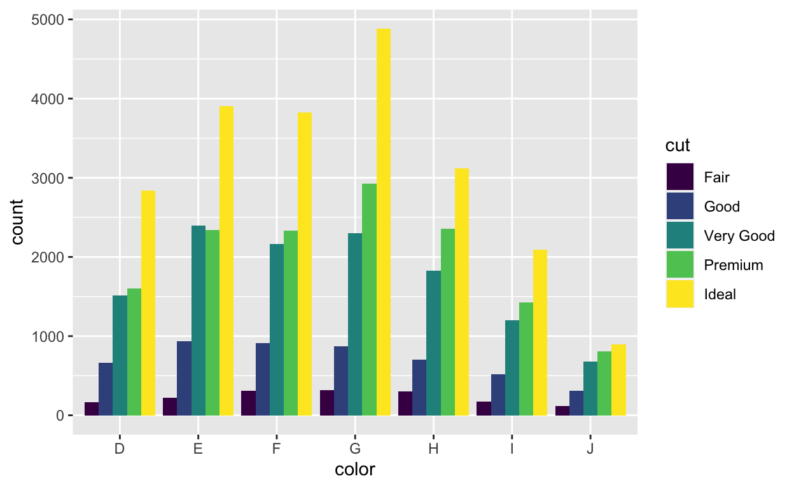
ggplot(data = diamonds) +
aes(x = color, fill = cut) +
geom_bar(position = "dodge")Exercice 8 - position = “identity”
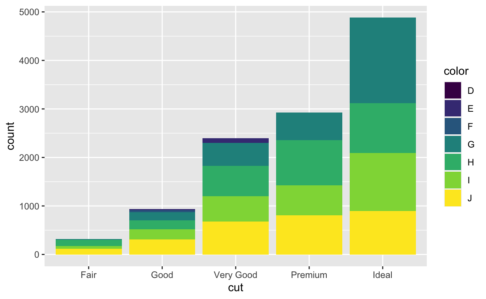
Facettes
Faire des facettes
Vous pouvez comparer des sous-groupes de données plus facilement si vous placez chaque sous-groupe dans son propre sous-graphique. Ce processus est nommé faire des facettes.
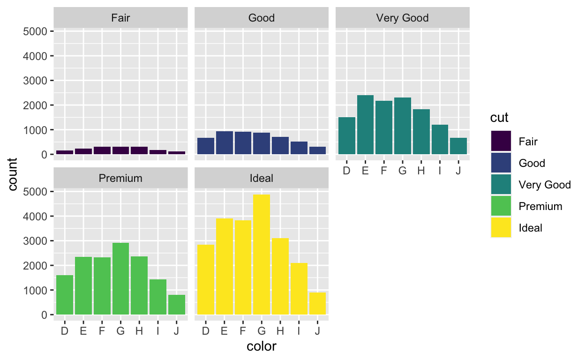
facet_grid()
Il y a deux fonctions pour faire des facettes dans {ggplot2}, facet_grid() et facet_wrap(). facet_grid() divise le graphique en une grille de sous graphiques selon la valeur d’une ou deux variables. Pour l’utiliser, ajoutez facet_grid() après le geom.
Voici trois façons de faire des facettes avec facet_grid(). Trouvez les différences puis lancez les codes pour comprendre ce que ces différences font.
ggplot(data = diamonds) +
aes(x = color) +
geom_bar() +
facet_grid(rows = vars(clarity), cols = vars(cut))ggplot(data = diamonds) +
aes(x = color) +
geom_bar() +
facet_grid(cols = vars(cut))ggplot(data = diamonds) +
aes(x = color) +
geom_bar() +
facet_grid(rows = vars(clarity))Récapitulatif pour facet_grid()
Comme vous l’avez vu dans les codes d’exemples, facet_grid() s’utilise en renseignant les noms des variables dans les arguments rows et cols.
facet_grid() va diviser le graphique en facettes verticales avec les valeurs de la première variable (celle indiquée dans rows). Chaque facette va contenir les observations qui ont la même valeur de la variable. Ensuite, facet_grid() va diviser le graphique en facettes horizontales avec les valeurs de la deuxième variable (celle indiquée dans cols). En résulte une grille de facettes, où chaque sous-graphique montre une combinaison spécifique de valeurs.
Si vous ne voulez pas diviser en vertical, ne renseignez pas l’un ou l’autre des arguments rows et cols de facet_grid().
facet_wrap()
facet_wrap() offre une autre façon de créer des facettes avec une seule variable. facet_wrap() divise le graphique en sous-graphiques, puis ré-arrange les sous-graphiques sur plusieurs lignes de façon à ce que chaque sous graphique ait un aspect plus ou moins carré. En gros, facet_wrap() met sur plusieurs lignes ce que facet_grid() mettrait en une ligne.
Pour utiliser facet_wrap(), donnez à l’argument facets un seul nom de variable contenu dans vars(), par exemple facet_wrap(facets = vars(color)).
Ajoutez facet_wrap() dans le code ci dessous pour créer le graphique qui apparaît au début cette section ‘Facettes’. Pour cela, vous devez créer des facettes en fonction de cut.
ggplot(data = diamonds) +
aes(x = color, fill = cut) +
geom_bar()ggplot(data = diamonds) +
aes(x = color, fill = cut) +
geom_bar() +
facet_wrap(facets = vars(cut))scales
Par défaut, chaque facette dans le graphique va avoir la même échelle \(x\) et \(y\). Vous pouvez changer cela en ajoutant l’argument scales dans facet_wrap() ou facet_grid(). Notez toutefois que ce n’est pas une bonne pratique car elle induit le lecteur en erreur.
scales = "free"fait varier les échelles des \(x\) et des \(y\)scales = "free_x"fait varier l’échelles des \(x\), mais pas l’échelle des \(y\).scales = "free_y"fait varier l’échelles des \(y\), mais pas l’échelle des \(x\). Ceci peut aider pour comparer les formes de différentes distributions :
ggplot(data = diamonds) +
aes(x = color, fill = cut) +
geom_bar() +
facet_wrap(facets = vars(cut), scales = "free_y")
Récapitulatif
Dans ce module, vous avez appris à faire un diagramme en barres. Mais la plupart des choses que vous avez apprises vont pouvoir s’appliquer a d’autres types de graphiques. Voici ce qu’il est est important de retenir :
Les diagrammes en barres sont la base pour les histogrammes, ce qui veut dire que vous pouvez interpréter les histogrammes de façon similaire.
La barre n’est pas le seul geom dans {ggplot2} qui utilise le paramètre esthétique
fill. Vous pouvez utiliser les paramètres esthétiquesfilletcoloravec tous les geom qui ont une surface.Vous pouvez utiliser les ajustements de positions avec tous les geom de {ggplot2} :
"identity","stack","dodge","fill","nudge", et"jitter"(nous regarderons"nudge"et"jitter"plus tard). Chaque geom a par défaut une position qui fait sens.Vous pouvez faire des facettes en ajoutant
facet_grid()oufacet_wrap()au code de graphique